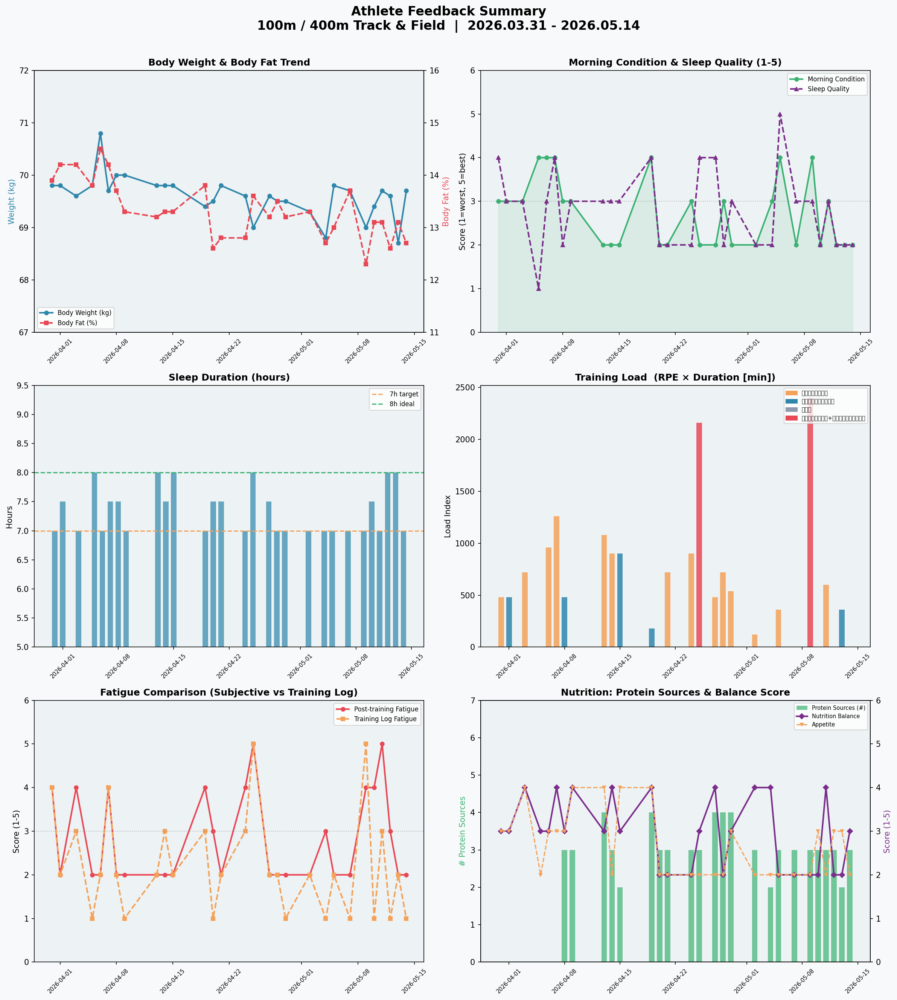
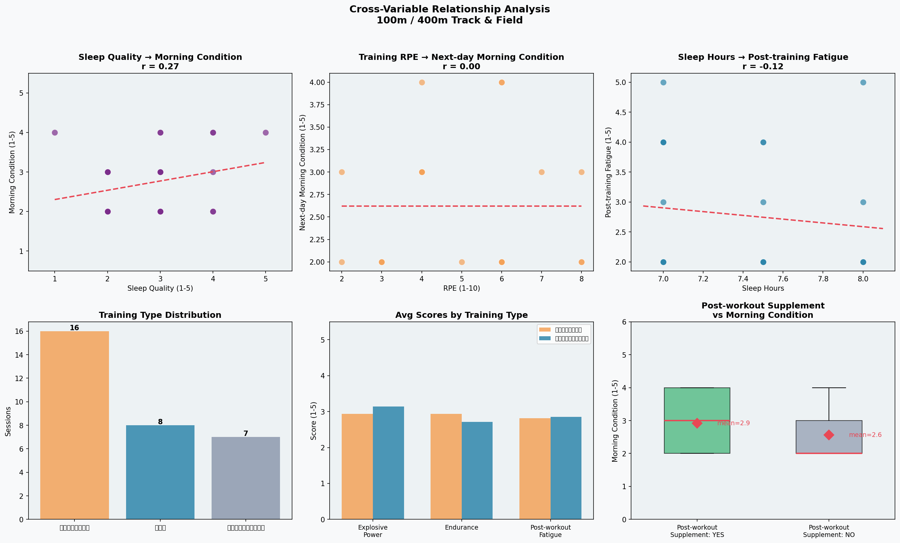
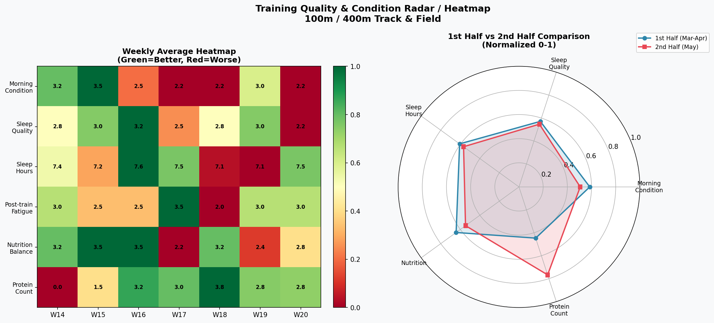
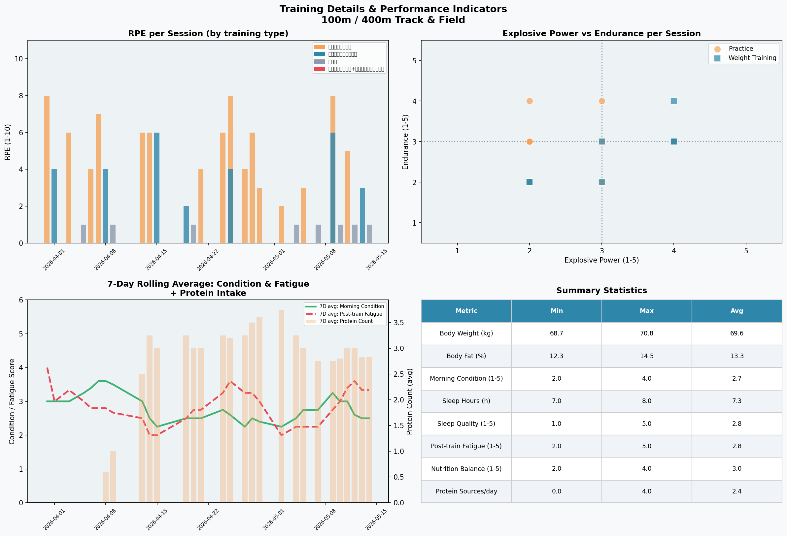

| 変数A | 変数B | 相関係数 r | 解釈 | 実践的意味 |
|---|---|---|---|---|
| 睡眠の質 | 起床時コンディション | r = 0.27 | 弱い正の相関 | 睡眠の質が上がると翌日のコンディションが改善する傾向。睡眠環境の整備が有効。 |
| 睡眠時間 | 練習後疲労度 | r = −0.12 | 弱い負の相関 | 睡眠が長いほど疲労感がやや低い傾向。データ数増加で有意性が高まる可能性あり。 |
| RPE（前日） | 翌日の起床時コンディション | 負の傾向 | 高強度練習後の回復不足 | RPE 7〜8 の練習翌日はコンディション低下が観察される。計画的な回復日の設定が重要。 |
| 練習後補食 | 翌日の起床時コンディション | YES: 2.92 vs NO: 2.56 | 補食あり群が+0.36点高い | 練習後30〜60分以内の補食がコンディション回復に寄与。毎回の実施を推奨。 |

